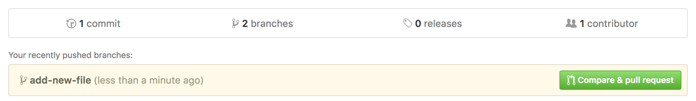
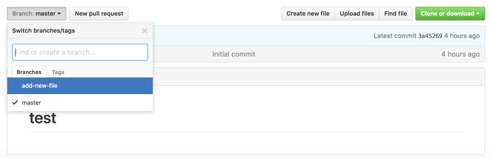

この段階では、ローカル環境でコミットが完了しています。この内容を、次のコマンドでGitHubへ反映させます。
$ git push origin add-new-file Counting objects: 3, done. Delta compression using up to 4 threads. Compressing objects: 100% (2/2), done. Writing objects: 100% (3/3), 319 bytes | 0 bytes/s, done. Total 3 (delta 0), reused 0 (delta 0) To github.com:github-sample/test.git * [new branch] add-new-file -> add-new-file
GitHubのサイトで確認をすると、ブランチの数が2になり、以下のようなモジュールも表示されます。
ブランチを切り替えることにより、それぞれの状態をブラウザ上で確認することもできます。
